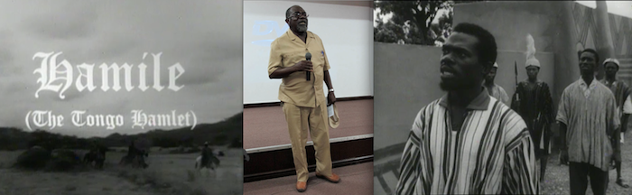
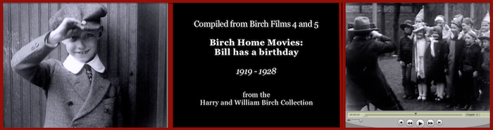
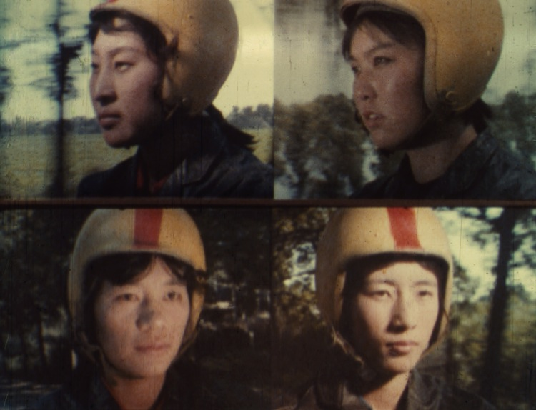

Wed/4.11 • Thurs/4.12 • Fri/4.13 • Sat/4.14
Saturday • APRIL 14, 2012
Note: Not all audio links []are functional yet.
ISLAND GOVERNANCE moderator Taylor McBride (NYU MIAP)
Jon Gartenberg and Jeff Capp (GME) Tassilo Adam: Moving Image Adventures in the Dutch East Indies of the 1920s
Jaime Partsch (Universidad del Este, Puerto Rico) Films by Governor Jesús T. Piñero
Bill Ferehawk (Society for Moving Images about the Built Environment) Rediscovering Buddhist Temples of Hawaii, 1948-1951
PROGRESSIVE EDUCATION and LABOR ADVOCACY: A Lee Dick Retrospective
Craig Kridel (U of South Carolina) introduces School: A Film about Progressive Education (1939, Lee Dick) with
Ivan von Sauer (BBC Worldwide) and Eugene Perl (Hessian Hills School, Croton-on-Hudson)
Dan Friedlaender (Temple U) & Adrianne Finelli (U of Michigan) "There Are Mean Things Happening in This Land":
Men and Dust (1940, Lee Dick)
REPORT from the ORPHAN WORKS SYMPOSIUM at UC Berkeley
David R. Hansen (Berkeley Digital Library Copyright Project), Howard Besser (NYU), and Rick Prelinger
[This scheduled 15-minute live video discussion was cancelled due to circumstances beyond anyone's control.]
However David Hansen has authored three white papers for the Berkeley Digital Library Copyright Project, available for download:
No. 1. "Orphan Works: Definitional Issues," December 19, 2011.
No. 2. "Orphan Works: Mapping the Possible Solution Spaces," March 9, 2012.
No. 3. "Orphan Works: Causes of the Problem," April 10, 2012.
POPULAR SCIENCE
Michael Aronson and Elizabeth Peterson (U of Oregon) You Are Getting Sleepy/Hungry/Horny…The Life and Times of Lester Beck, Filmmaking Psychologist: Human Growth (Sy Wexler, 1948)
Heather Heckman and Mark G. Cooper (U of South Carolina MIRC) Preprint elements from the Roman Vishniac Film Collection and The Worlds of Dr. Vishniac (Educational Testing Service, 1959)
Sergei Kapterev (Moscow Research Institute of Film Art) on The Flight to Thousands of Suns (Aleksei Yerin, 1963)
INTENTIONS, ACCIDENTS, ETHICS: Making "Lost Films" Accessible
Mona Jimenez (NYU Audiovisual Preservation Exchange) Ghana-U.S. Partnerships: Rediscovering Hamile: The Tongo Hamlet (1964, Ghana Film Industry Corporation)

Louis Massiah (Swarthmore) on The Burial of Dr. Du Bois (1963, Ghanafilm)
Manthia Diawara (NYU) on Présence Africaine's Les Statues meurent aussi / Statues Also Die (Chris Marker and Alain Resnais, 1953)
ON NEWSFILM
Mark J. Williams (Dartmouth) Local TV newsfilm: KTLA outtakes and Poison Grain (NBC News, 1967)
Greg Wilsbacher (USC MIRC) and Nancy McLean Suniewick (Colorlab) Remembering Bill Birch
clips from American Cameraman (work in progress) and Birch family home movies:
Bill Has a Birthday (Harry Birch with Rufus Pasquale, 1919-1928) and [Bill and Mac] (Chicago, 194?)

FINAL SCREENING: Behavior Modification Lite
Mark Street Trailer Trash (2009)
available from Canyon Cinema
Caitlin Hammer (NYU MIAP) The Orphan Film Project DVD series
Marie Lascu (NYU MIAP) introduces
Laura Kissel talks via video feed with
Karl Heider (Tokyo U) Study of a Parent's Behavior: Studies of Apparent Behavior (1943, Fritz Heider and Marianne Simmel) Preserved by BB Optics and NYU MIAP
Jodie Mack (Dartmouth) a Hanover makeover of the Heider-Simmel film: Studies of Apparent Motion (Dartmouth students, 2011)
Marie Lascu [for Rufus De Rahm] (NYU MIAP) USC digital remakes:
A Revisionist Account of Heroic Behavior (Ross Ovington)
Heider-Simmel (Remake) (Lorenzo Brown)
Can't Fool Pacman: The Remake! (Amy Jumper)
Nico de Klerk The Hands of a Stranger (Richard Heffron/USIA, 1966)
Remembering Alan Stark Russ Suniewick (Colorlab) and Sarah Meyerson
[Film Technology. Alan Memorial. Screen Tests. Mumps.] (Ralph Sargent, 2011)
Robert Martens & Walter Forsberg present Auroratone: When the Organ Played "O Promise Me" (Cecil Stokes, 194?) with Bing Crosby. Preserved by Film Technology Co.
Dan Streible, reel 3 of New York University (Willard Van Dyke, 196?) [Note: This film was given to participants on a USB Flashdrive. Made available here from a 35mm print in the Prelinger Collection (acquired from the International Film Bureau) at the Library of Congress.]
Elizabeth Peterson (U of Oregon) Adaptive Behavior of Golden-Mantled Ground Squirrels (Lester F. Beck, 1942)
Rachael Stoeltje and Martha Harsanyi (Indiana U) Chucky Lou: Story of a Woodchuck (Indiana University Audio-Visual Center, 1948)
Marsha Orgeron (NC State U) Corporal Sam Fuller's How to Light a Cigar (1945)
Andrew Lampert (Anthology Film Archives) AFA Pledge Drive (ca. late 1970s/early 1980s)
Stephen Parr (Oddball Film + Video) Sun Healing the Ultra-Violet Way with Life Lite (1934)
Lydia Pappas and Yongli Li (USC MIRC) Light Cavalry Girl (轻骑姑娘, Jie Shen, Central Newsreel and Documentary Film Studio, Beijing, 1980) and the University of South Carolina MIRC Chinese Film Collection

View an excerpt from Light Cavalry Girl , showing the Bayi Women Light Motorcycle Team.
Also see MIRC's Digital Video Repository (launched July 2012).